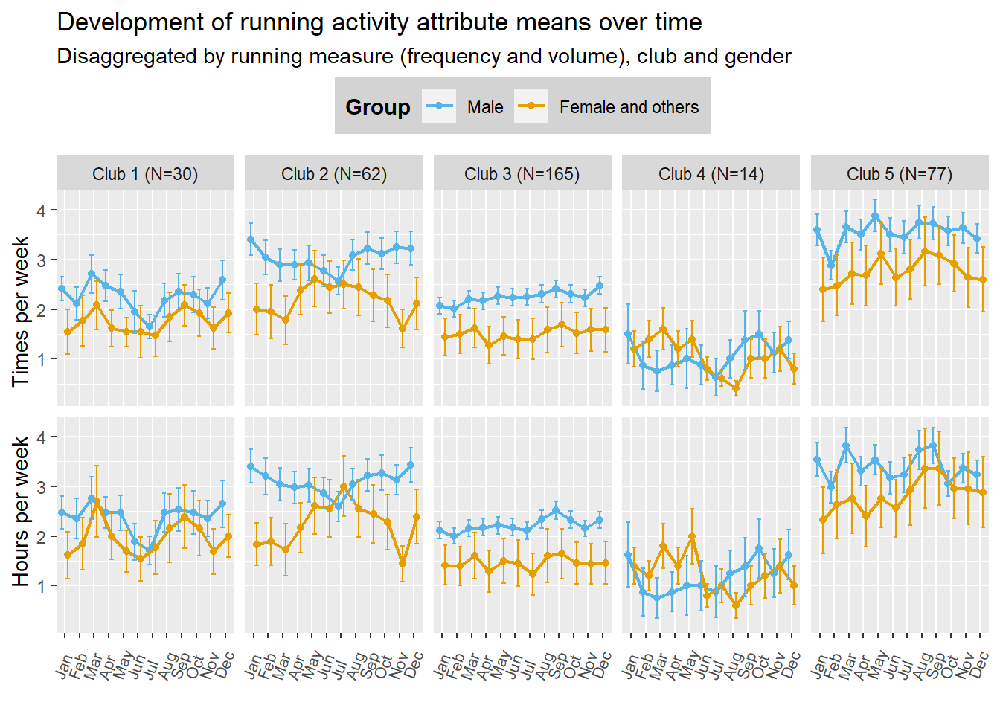

This script replicates Figure 5 (Development of the mean of running
attributes).
Plot
# data males (mean run freq./vol. and mean freq./vol. other activities: cycling swimming)
mean_freq <- mean_vol <- matrix(NA, nrow=12, ncol=5)
for ( i in 1:5) {
for ( t in 1:12) {
mean_freq[t,i] <- mean(clubdata[[i]]$freq_run[,,t][which(clubdata[[i]]$male==1)])
mean_vol[t,i] <- mean(clubdata[[i]]$time_run[,,t][which(clubdata[[i]]$male==1)])
}
}
sd_freq <- sd_vol <- matrix(NA, nrow=12, ncol=5)
for ( i in 1:5) {
for ( t in 1:12) {
sd_freq[t,i] <- sd(clubdata[[i]]$freq_run[,,t][which(clubdata[[i]]$male==1)])
sd_vol[t,i] <- sd(clubdata[[i]]$time_run[,,t][which(clubdata[[i]]$male==1)])
}
}
se_freq <- se_vol <- matrix(NA, nrow=12, ncol=5)
for ( i in 1:5) {
for ( t in 1:12) {
se_freq[t,i] <- sd_freq[t,i]/sqrt(sum(clubdata[[i]]$male==1))
se_vol[t,i] <- sd_vol[t,i]/sqrt(sum(clubdata[[i]]$male==1))
}
}
data_male <- data.frame(
mean = as.vector(c(mean_freq, mean_vol)),
sd = as.vector(c(sd_freq, sd_vol)),
se = as.vector(c(se_freq, se_vol)),
club = as.character(sort(replicate(12, c("Club 1 (N=30)", "Club 2 (N=62)", "Club 3 (N=165)", "Club 4 (N=14)", "Club 5 (N=77)")))),
time = rep(c(1:12)),
Attribute = c(rep("Frequency", 12*5), rep("Volume", 12*5)),
Group = "Male")
# data females and others
mean_freq <- matrix(NA, nrow=12, ncol=5)
mean_vol <- matrix(NA, nrow=12, ncol=5)
for ( i in 1:5) {
for ( t in 1:12) {
mean_freq[t,i] <- mean(clubdata[[i]]$freq_run[,,t][which(!clubdata[[i]]$male==1)])
mean_vol[t,i] <- mean(clubdata[[i]]$time_run[,,t][which(!clubdata[[i]]$male==1)])
}
}
sd_freq <- matrix(NA, nrow=12, ncol=5)
sd_vol <- matrix(NA, nrow=12, ncol=5)
for ( i in 1:5) {
for ( t in 1:12) {
sd_freq[t,i] <- sd(clubdata[[i]]$freq_run[,,t][which(!clubdata[[i]]$male==1)])
sd_vol[t,i] <- sd(clubdata[[i]]$time_run[,,t][which(!clubdata[[i]]$male==1)])
}
}
se_freq <- matrix(NA, nrow=12, ncol=5)
se_vol <- matrix(NA, nrow=12, ncol=5)
for ( i in 1:5) {
for ( t in 1:12) {
se_freq[t,i] <- sd_freq[t,i]/sqrt(sum(!clubdata[[1]]$male==1))
se_vol[t,i] <- sd_vol[t,i]/sqrt(sum(!clubdata[[1]]$male==1))
}
}
data_female <- data.frame(
mean = as.vector(c(mean_freq, mean_vol)),
sd = as.vector(c(sd_freq, sd_vol)),
se = as.vector(c(se_freq, se_vol)),
club = as.character(sort(replicate(12, c("Club 1 (N=30)", "Club 2 (N=62)", "Club 3 (N=165)", "Club 4 (N=14)", "Club 5 (N=77)")))),
time = rep(c(1:12)),
Attribute = c(rep("Frequency", 12*5), rep("Volume", 12*5)),
Group = "Female and others"
)
plot <- rbind(data_male, data_female) #, data_all)
pd <- position_dodge(width = .8) # dodge between points to prevent overlap of CIs
plot$Group <- factor(plot$Group,
levels = c("Male", "Female and others"))
ggplot(plot, aes(x=time, y=mean, colour=Group, #shape = Attribute,
group=Group)) +
#group=interaction(Group, Attribute))) +
geom_point(size = 1.5, position = pd) +
geom_line(size = .75, position = pd) +
geom_errorbar(aes(time, mean, ymin = mean - se, ymax = mean + se),
width = 0.6, position = pd) +
labs(title="Development of running activity attribute means over time",
subtitle="Disaggregated by running measure (frequency and volume), club and gender") +
scale_colour_manual(values=c("#56B4E9", "#E69F00")) +
labs(x = "", y = "Hours per week Times per week") +
scale_y_continuous(breaks = seq(0, 5, by = 1)) +
scale_x_discrete(limits=c("Jan", "Feb", "Mar", "Apr", "May", "Jun", "Jul", "Aug", "Sep", "Oct", "Nov", "Dec")) +
facet_grid(Attribute~club) +
theme(axis.text.x = element_text(size = 8, angle = 70, vjust = -.2, hjust=-.1),
legend.position = "top",
legend.box.just = "right",
legend.direction = "horizontal",
legend.background = element_rect(fill="lightgray", size=.5, linetype="dotted"),
legend.title = element_text(face = "bold"),
#legend.background = element_rect(fill ="gray90", size=.5),
strip.text.y = element_blank())

LS0tDQp0aXRsZTogIlJlcGxpY2F0aW5nIFRhYmxlIDEiDQpkYXRlOiAiTGFzdCBjb21waWxlZCBvbiBgciBmb3JtYXQoU3lzLnRpbWUoKSwgJyVCLCAlWScpYCINCmJpYmxpb2dyYXBoeTogcmVmZXJlbmNlcy5iaWINCm91dHB1dDoNCiAgaHRtbF9kb2N1bWVudDoNCiAgICBjc3M6IHR3ZWFrcy5jc3MNCiAgICB0b2M6IHRydWUNCiAgICB0b2NfZmxvYXQ6IHRydWUNCiAgICBjb2xsYXBzZWQ6IGZhbHNlDQogICAgbnVtYmVyX3NlY3Rpb25zOiBmYWxzZQ0KICAgIHRvY19kZXB0aDogMQ0KICAgIGNvZGVfZm9sZGluZzogc2hvdw0KICAgIGNvZGVfZG93bmxvYWQ6IHllcw0KLS0tDQoNCg0KYGBge3IsIGdsb2JhbHNldHRpbmdzLCBlY2hvPUZBTFNFLCB3YXJuaW5nPUZBTFNFLCByZXN1bHRzPSdoaWRlJ30NCmxpYnJhcnkoa25pdHIpDQoNCmtuaXRyOjpvcHRzX2NodW5rJHNldChlY2hvID0gVFJVRSkNCm9wdHNfY2h1bmskc2V0KHRpZHkub3B0cz1saXN0KHdpZHRoLmN1dG9mZj0xMDApLHRpZHk9VFJVRSwgd2FybmluZyA9IEZBTFNFLCBtZXNzYWdlID0gRkFMU0UsY29tbWVudCA9ICIjPiIsIGNhY2hlPVRSVUUsIGNsYXNzLnNvdXJjZT1jKCJ0ZXN0IiksIGNsYXNzLm91dHB1dD1jKCJ0ZXN0MiIpKQ0Kb3B0aW9ucyh3aWR0aCA9IDEwMCkNCnJnbDo6c2V0dXBLbml0cigpDQoNCg0KDQpjb2xvcml6ZSA8LSBmdW5jdGlvbih4LCBjb2xvcikge3NwcmludGYoIjxzcGFuIHN0eWxlPSdjb2xvcjogJXM7Jz4lczwvc3Bhbj4iLCBjb2xvciwgeCkgfQ0KDQpgYGANCg0KYGBge3Iga2xpcHB5LCBlY2hvPUZBTFNFLCBpbmNsdWRlPVRSVUV9DQprbGlwcHk6OmtsaXBweShwb3NpdGlvbiA9IGMoJ3RvcCcsICdyaWdodCcpKQ0KI2tsaXBweTo6a2xpcHB5KGNvbG9yID0gJ2RhcmtyZWQnKQ0KI2tsaXBweTo6a2xpcHB5KHRvb2x0aXBfbWVzc2FnZSA9ICdDbGljayB0byBjb3B5JywgdG9vbHRpcF9zdWNjZXNzID0gJ0RvbmUnKQ0KYGBgDQoNCg0KDQotLS0NCg0KVGhpcyBzY3JpcHQgcmVwbGljYXRlcyBGaWd1cmUgNSAoRGV2ZWxvcG1lbnQgb2YgdGhlIG1lYW4gb2YgcnVubmluZyBhdHRyaWJ1dGVzKS4NCg0KPGJyPg0KDQojIFByZXBhcmF0aW9uDQoNCg0KDQpDbGVhbiB0aGUgd29ya2luZyBlbnZpcm9ubWVudCwgbG9hZCBpbiB0aGUgY2x1YiBkYXRhLCBsb2FkIHNvbWUgcGFja2FnZXMuDQoNCmBgYHtyLCB3YXJuaW5nPUZBTFNFfQ0KIyBjbGVhbiB0aGUgd29ya2luZyBlbnZpcm9ubWVudCANCnJtIChsaXN0ID0gbHMoICkpDQoNCiNwYWNrYWdlcw0KbGlicmFyeShkcGx5cikNCmxpYnJhcnkobW9tZW50cykNCmxpYnJhcnkoZ2dwbG90MikNCg0KbG9hZCgiY2x1YmRhdGEuUkRhdGEiKQ0KDQpgYGANCg0KIyBQbG90DQoNCmBgYHtyfQ0KDQojIGRhdGEgbWFsZXMgKG1lYW4gcnVuIGZyZXEuL3ZvbC4gYW5kIG1lYW4gZnJlcS4vdm9sLiBvdGhlciBhY3Rpdml0aWVzOiBjeWNsaW5nIHN3aW1taW5nKQ0KbWVhbl9mcmVxIDwtIG1lYW5fdm9sIDwtIG1hdHJpeChOQSwgbnJvdz0xMiwgbmNvbD01KQ0KZm9yICggaSBpbiAxOjUpIHsNCiAgZm9yICggdCBpbiAxOjEyKSB7DQogICAgbWVhbl9mcmVxW3QsaV0gPC0gbWVhbihjbHViZGF0YVtbaV1dJGZyZXFfcnVuWywsdF1bd2hpY2goY2x1YmRhdGFbW2ldXSRtYWxlPT0xKV0pDQogICAgbWVhbl92b2xbdCxpXSA8LSBtZWFuKGNsdWJkYXRhW1tpXV0kdGltZV9ydW5bLCx0XVt3aGljaChjbHViZGF0YVtbaV1dJG1hbGU9PTEpXSkNCiAgfQ0KfQ0KDQpzZF9mcmVxIDwtIHNkX3ZvbCA8LSBtYXRyaXgoTkEsIG5yb3c9MTIsIG5jb2w9NSkNCmZvciAoIGkgaW4gMTo1KSB7DQogIGZvciAoIHQgaW4gMToxMikgew0KICAgIHNkX2ZyZXFbdCxpXSA8LSBzZChjbHViZGF0YVtbaV1dJGZyZXFfcnVuWywsdF1bd2hpY2goY2x1YmRhdGFbW2ldXSRtYWxlPT0xKV0pDQogICAgc2Rfdm9sW3QsaV0gPC0gc2QoY2x1YmRhdGFbW2ldXSR0aW1lX3J1blssLHRdW3doaWNoKGNsdWJkYXRhW1tpXV0kbWFsZT09MSldKQ0KICB9DQp9DQoNCnNlX2ZyZXEgPC0gc2Vfdm9sIDwtIG1hdHJpeChOQSwgbnJvdz0xMiwgbmNvbD01KSANCmZvciAoIGkgaW4gMTo1KSB7DQogIGZvciAoIHQgaW4gMToxMikgew0KICAgIHNlX2ZyZXFbdCxpXSA8LSBzZF9mcmVxW3QsaV0vc3FydChzdW0oY2x1YmRhdGFbW2ldXSRtYWxlPT0xKSkNCiAgICBzZV92b2xbdCxpXSA8LSBzZF92b2xbdCxpXS9zcXJ0KHN1bShjbHViZGF0YVtbaV1dJG1hbGU9PTEpKQ0KICB9DQp9DQoNCmRhdGFfbWFsZSA8LSBkYXRhLmZyYW1lKA0KICBtZWFuID0gYXMudmVjdG9yKGMobWVhbl9mcmVxLCBtZWFuX3ZvbCkpLA0KICBzZCA9IGFzLnZlY3RvcihjKHNkX2ZyZXEsIHNkX3ZvbCkpLA0KICBzZSA9ICBhcy52ZWN0b3IoYyhzZV9mcmVxLCBzZV92b2wpKSwNCiAgY2x1YiA9IGFzLmNoYXJhY3Rlcihzb3J0KHJlcGxpY2F0ZSgxMiwgYygiQ2x1YiAxIChOPTMwKSIsICJDbHViIDIgKE49NjIpIiwgIkNsdWIgMyAoTj0xNjUpIiwgIkNsdWIgNCAoTj0xNCkiLCAiQ2x1YiA1IChOPTc3KSIpKSkpLA0KICB0aW1lID0gcmVwKGMoMToxMikpLA0KICBBdHRyaWJ1dGUgPSBjKHJlcCgiRnJlcXVlbmN5IiwgMTIqNSksIHJlcCgiVm9sdW1lIiwgMTIqNSkpLA0KICBHcm91cCA9ICJNYWxlIikNCg0KDQojIGRhdGEgZmVtYWxlcyBhbmQgb3RoZXJzDQptZWFuX2ZyZXEgPC0gbWF0cml4KE5BLCBucm93PTEyLCBuY29sPTUpDQptZWFuX3ZvbCA8LSBtYXRyaXgoTkEsIG5yb3c9MTIsIG5jb2w9NSkNCmZvciAoIGkgaW4gMTo1KSB7DQogIGZvciAoIHQgaW4gMToxMikgew0KICAgIG1lYW5fZnJlcVt0LGldIDwtIG1lYW4oY2x1YmRhdGFbW2ldXSRmcmVxX3J1blssLHRdW3doaWNoKCFjbHViZGF0YVtbaV1dJG1hbGU9PTEpXSkNCiAgICBtZWFuX3ZvbFt0LGldIDwtIG1lYW4oY2x1YmRhdGFbW2ldXSR0aW1lX3J1blssLHRdW3doaWNoKCFjbHViZGF0YVtbaV1dJG1hbGU9PTEpXSkNCiAgfQ0KfQ0KDQpzZF9mcmVxIDwtIG1hdHJpeChOQSwgbnJvdz0xMiwgbmNvbD01KQ0Kc2Rfdm9sIDwtIG1hdHJpeChOQSwgbnJvdz0xMiwgbmNvbD01KQ0KZm9yICggaSBpbiAxOjUpIHsNCiAgZm9yICggdCBpbiAxOjEyKSB7DQogICAgc2RfZnJlcVt0LGldIDwtIHNkKGNsdWJkYXRhW1tpXV0kZnJlcV9ydW5bLCx0XVt3aGljaCghY2x1YmRhdGFbW2ldXSRtYWxlPT0xKV0pDQogICAgc2Rfdm9sW3QsaV0gPC0gc2QoY2x1YmRhdGFbW2ldXSR0aW1lX3J1blssLHRdW3doaWNoKCFjbHViZGF0YVtbaV1dJG1hbGU9PTEpXSkNCiAgfQ0KfQ0KDQpzZV9mcmVxIDwtIG1hdHJpeChOQSwgbnJvdz0xMiwgbmNvbD01KSAgDQpzZV92b2wgPC0gbWF0cml4KE5BLCBucm93PTEyLCBuY29sPTUpICANCmZvciAoIGkgaW4gMTo1KSB7DQogIGZvciAoIHQgaW4gMToxMikgew0KICAgIHNlX2ZyZXFbdCxpXSA8LSBzZF9mcmVxW3QsaV0vc3FydChzdW0oIWNsdWJkYXRhW1sxXV0kbWFsZT09MSkpDQogICAgc2Vfdm9sW3QsaV0gPC0gc2Rfdm9sW3QsaV0vc3FydChzdW0oIWNsdWJkYXRhW1sxXV0kbWFsZT09MSkpDQogIH0NCn0NCg0KZGF0YV9mZW1hbGUgPC0gZGF0YS5mcmFtZSgNCiAgbWVhbiA9IGFzLnZlY3RvcihjKG1lYW5fZnJlcSwgbWVhbl92b2wpKSwNCiAgc2QgPSBhcy52ZWN0b3IoYyhzZF9mcmVxLCBzZF92b2wpKSwNCiAgc2UgPSAgYXMudmVjdG9yKGMoc2VfZnJlcSwgc2Vfdm9sKSksDQogIGNsdWIgPSBhcy5jaGFyYWN0ZXIoc29ydChyZXBsaWNhdGUoMTIsIGMoIkNsdWIgMSAoTj0zMCkiLCAiQ2x1YiAyIChOPTYyKSIsICJDbHViIDMgKE49MTY1KSIsICJDbHViIDQgKE49MTQpIiwgIkNsdWIgNSAoTj03NykiKSkpKSwNCiAgdGltZSA9IHJlcChjKDE6MTIpKSwNCiAgQXR0cmlidXRlID0gYyhyZXAoIkZyZXF1ZW5jeSIsIDEyKjUpLCByZXAoIlZvbHVtZSIsIDEyKjUpKSwNCiAgR3JvdXAgPSAiRmVtYWxlIGFuZCBvdGhlcnMiDQopDQoNCnBsb3QgPC0gcmJpbmQoZGF0YV9tYWxlLCBkYXRhX2ZlbWFsZSkgIywgZGF0YV9hbGwpDQoNCnBkIDwtIHBvc2l0aW9uX2RvZGdlKHdpZHRoID0gLjgpICMgZG9kZ2UgYmV0d2VlbiBwb2ludHMgdG8gcHJldmVudCBvdmVybGFwIG9mIENJcw0KDQpwbG90JEdyb3VwIDwtIGZhY3RvcihwbG90JEdyb3VwLA0KICAgICAgICAgICAgICAgICAgICAgbGV2ZWxzID0gYygiTWFsZSIsICJGZW1hbGUgYW5kIG90aGVycyIpKQ0KDQpnZ3Bsb3QocGxvdCwgYWVzKHg9dGltZSwgeT1tZWFuLCBjb2xvdXI9R3JvdXAsICNzaGFwZSA9IEF0dHJpYnV0ZSwNCiAgICAgICAgICAgICAgICAgZ3JvdXA9R3JvdXApKSArDQogICNncm91cD1pbnRlcmFjdGlvbihHcm91cCwgQXR0cmlidXRlKSkpICsgDQogIGdlb21fcG9pbnQoc2l6ZSA9IDEuNSwgcG9zaXRpb24gPSBwZCkgKyANCiAgZ2VvbV9saW5lKHNpemUgPSAuNzUsIHBvc2l0aW9uID0gcGQpICsNCiAgZ2VvbV9lcnJvcmJhcihhZXModGltZSwgbWVhbiwgeW1pbiA9IG1lYW4gLSBzZSwgeW1heCA9IG1lYW4gKyBzZSksIA0KICAgICAgICAgICAgICAgIHdpZHRoID0gMC42LCBwb3NpdGlvbiA9IHBkKSArDQogIGxhYnModGl0bGU9IkRldmVsb3BtZW50IG9mIHJ1bm5pbmcgYWN0aXZpdHkgYXR0cmlidXRlIG1lYW5zIG92ZXIgdGltZSIsIA0KICAgICAgIHN1YnRpdGxlPSJEaXNhZ2dyZWdhdGVkIGJ5IHJ1bm5pbmcgbWVhc3VyZSAoZnJlcXVlbmN5IGFuZCB2b2x1bWUpLCBjbHViIGFuZCBnZW5kZXIiKSArDQogIHNjYWxlX2NvbG91cl9tYW51YWwodmFsdWVzPWMoIiM1NkI0RTkiLCAiI0U2OUYwMCIpKSArDQogIGxhYnMoeCA9ICIiLCB5ID0gIkhvdXJzIHBlciB3ZWVrICAgICAgICBUaW1lcyBwZXIgd2VlayIpICsNCiAgc2NhbGVfeV9jb250aW51b3VzKGJyZWFrcyA9IHNlcSgwLCA1LCBieSA9IDEpKSArDQogIHNjYWxlX3hfZGlzY3JldGUobGltaXRzPWMoIkphbiIsICJGZWIiLCAiTWFyIiwgIkFwciIsICJNYXkiLCAiSnVuIiwgIkp1bCIsICJBdWciLCAiU2VwIiwgIk9jdCIsICJOb3YiLCAiRGVjIikpICsNCiAgZmFjZXRfZ3JpZChBdHRyaWJ1dGV+Y2x1YikgKw0KICB0aGVtZShheGlzLnRleHQueCA9IGVsZW1lbnRfdGV4dChzaXplID0gOCwgYW5nbGUgPSA3MCwgdmp1c3QgPSAtLjIsIGhqdXN0PS0uMSksIA0KICAgICAgICBsZWdlbmQucG9zaXRpb24gPSAidG9wIiwNCiAgICAgICAgbGVnZW5kLmJveC5qdXN0ID0gInJpZ2h0IiwNCiAgICAgICAgbGVnZW5kLmRpcmVjdGlvbiA9ICJob3Jpem9udGFsIiwNCiAgICAgICAgbGVnZW5kLmJhY2tncm91bmQgPSBlbGVtZW50X3JlY3QoZmlsbD0ibGlnaHRncmF5Iiwgc2l6ZT0uNSwgbGluZXR5cGU9ImRvdHRlZCIpLA0KICAgICAgICBsZWdlbmQudGl0bGUgPSBlbGVtZW50X3RleHQoZmFjZSA9ICJib2xkIiksDQogICAgICAgICNsZWdlbmQuYmFja2dyb3VuZCA9IGVsZW1lbnRfcmVjdChmaWxsID0iZ3JheTkwIiwgc2l6ZT0uNSksDQogICAgICAgIHN0cmlwLnRleHQueSA9IGVsZW1lbnRfYmxhbmsoKSkNCmBgYA0KDQoNCg0KDQoNCg==